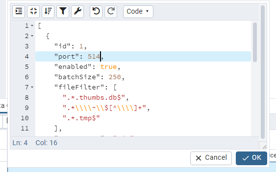

Symptoms
Customer/Environmental need to customize StealthDEFEND listening ports for Event Service.
Cause
Customer or environmental need dictates that default DEFEND Event Service listening port(s) need to be altered.
Resolution
Alter the Default DFENEND Event Service Listening port(s) via PGAdmin:
- Install the latest PGAdmin Console: https://www.pgadmin.org/download/
- Connect to the DEFEND database. You will have to create a “Master” password for PGAdmin as well as enter the DEFEND database password:
DEFEND124!! - Select Tables > defend_config table
- Right click and select View/Edit Data > First 100 Rows
- Change the Value for the port in question on the line 2 (10000 is the Default FS Port and 10001 is the Default AD Port):
[{"id":1,"port":10000,"enabled":true, ...}{"id":2,"port":10001,"enabled":true, ...}{...}]
For Example, change the FS port to 514 and click OK:
 - In the Window below click the Save Data Changes icon
- Restart the DEFEND Event Service